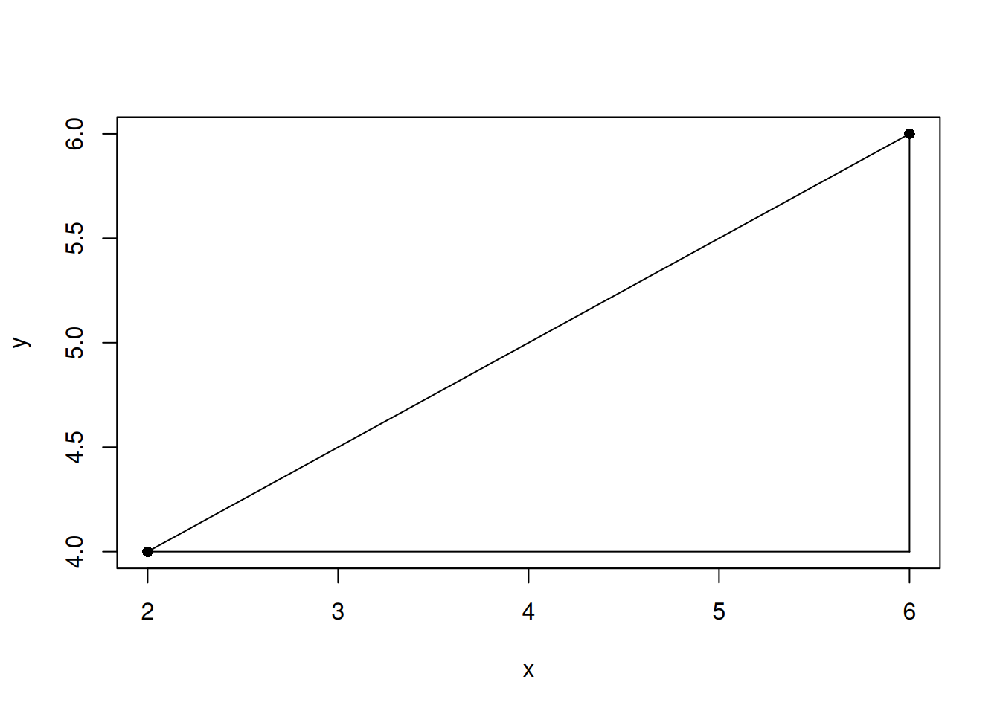
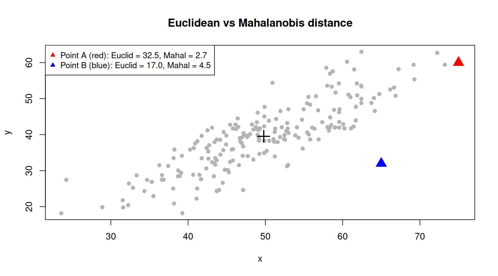
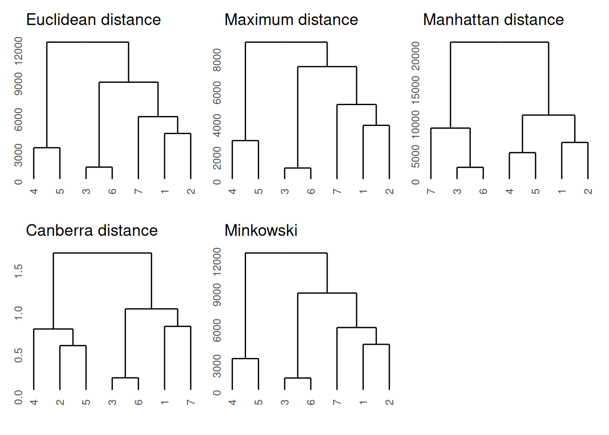

Last updated: 2026-03-24
Checks: 7 0
Knit directory: muse/
This reproducible R Markdown analysis was created with workflowr (version 1.7.2). The Checks tab describes the reproducibility checks that were applied when the results were created. The Past versions tab lists the development history.
Great! Since the R Markdown file has been committed to the Git repository, you know the exact version of the code that produced these results.
Great job! The global environment was empty. Objects defined in the global environment can affect the analysis in your R Markdown file in unknown ways. For reproduciblity it’s best to always run the code in an empty environment.
The command set.seed(20200712) was run prior to running
the code in the R Markdown file. Setting a seed ensures that any results
that rely on randomness, e.g. subsampling or permutations, are
reproducible.
Great job! Recording the operating system, R version, and package versions is critical for reproducibility.
Nice! There were no cached chunks for this analysis, so you can be confident that you successfully produced the results during this run.
Great job! Using relative paths to the files within your workflowr project makes it easier to run your code on other machines.
Great! You are using Git for version control. Tracking code development and connecting the code version to the results is critical for reproducibility.
The results in this page were generated with repository version 8e62e53. See the Past versions tab to see a history of the changes made to the R Markdown and HTML files.
Note that you need to be careful to ensure that all relevant files for
the analysis have been committed to Git prior to generating the results
(you can use wflow_publish or
wflow_git_commit). workflowr only checks the R Markdown
file, but you know if there are other scripts or data files that it
depends on. Below is the status of the Git repository when the results
were generated:
Ignored files:
Ignored: .Rproj.user/
Ignored: analysis/figure/
Ignored: data/1M_neurons_filtered_gene_bc_matrices_h5.h5
Ignored: data/293t/
Ignored: data/293t_3t3_filtered_gene_bc_matrices.tar.gz
Ignored: data/293t_filtered_gene_bc_matrices.tar.gz
Ignored: data/5k_Human_Donor1_PBMC_3p_gem-x_5k_Human_Donor1_PBMC_3p_gem-x_count_sample_filtered_feature_bc_matrix.h5
Ignored: data/5k_Human_Donor2_PBMC_3p_gem-x_5k_Human_Donor2_PBMC_3p_gem-x_count_sample_filtered_feature_bc_matrix.h5
Ignored: data/5k_Human_Donor3_PBMC_3p_gem-x_5k_Human_Donor3_PBMC_3p_gem-x_count_sample_filtered_feature_bc_matrix.h5
Ignored: data/5k_Human_Donor4_PBMC_3p_gem-x_5k_Human_Donor4_PBMC_3p_gem-x_count_sample_filtered_feature_bc_matrix.h5
Ignored: data/97516b79-8d08-46a6-b329-5d0a25b0be98.h5ad
Ignored: data/Parent_SC3v3_Human_Glioblastoma_filtered_feature_bc_matrix.tar.gz
Ignored: data/brain_counts/
Ignored: data/cl.obo
Ignored: data/cl.owl
Ignored: data/jurkat/
Ignored: data/jurkat:293t_50:50_filtered_gene_bc_matrices.tar.gz
Ignored: data/jurkat_293t/
Ignored: data/jurkat_filtered_gene_bc_matrices.tar.gz
Ignored: data/pbmc20k/
Ignored: data/pbmc20k_seurat/
Ignored: data/pbmc3k.csv
Ignored: data/pbmc3k.csv.gz
Ignored: data/pbmc3k.h5ad
Ignored: data/pbmc3k/
Ignored: data/pbmc3k_bpcells_mat/
Ignored: data/pbmc3k_export.mtx
Ignored: data/pbmc3k_matrix.mtx
Ignored: data/pbmc3k_seurat.rds
Ignored: data/pbmc4k_filtered_gene_bc_matrices.tar.gz
Ignored: data/pbmc_1k_v3_filtered_feature_bc_matrix.h5
Ignored: data/pbmc_1k_v3_raw_feature_bc_matrix.h5
Ignored: data/refdata-gex-GRCh38-2020-A.tar.gz
Ignored: data/seurat_1m_neuron.rds
Ignored: data/t_3k_filtered_gene_bc_matrices.tar.gz
Ignored: r_packages_4.5.2/
Untracked files:
Untracked: .claude/
Untracked: CLAUDE.md
Untracked: analysis/.claude/
Untracked: analysis/aucc.Rmd
Untracked: analysis/bimodal.Rmd
Untracked: analysis/bioc.Rmd
Untracked: analysis/bioc_scrnaseq.Rmd
Untracked: analysis/chick_weight.Rmd
Untracked: analysis/likelihood.Rmd
Untracked: analysis/modelling.Rmd
Untracked: analysis/sampleqc.Rmd
Untracked: analysis/wordpress_readability.Rmd
Untracked: bpcells_matrix/
Untracked: data/Caenorhabditis_elegans.WBcel235.113.gtf.gz
Untracked: data/GCF_043380555.1-RS_2024_12_gene_ontology.gaf.gz
Untracked: data/SeuratObj.rds
Untracked: data/arab.rds
Untracked: data/astronomicalunit.csv
Untracked: data/davetang039sblog.WordPress.2026-02-12.xml
Untracked: data/femaleMiceWeights.csv
Untracked: data/lung_bcell.rds
Untracked: m3/
Untracked: women.json
Unstaged changes:
Modified: analysis/isoform_switch_analyzer.Rmd
Modified: analysis/linear_models.Rmd
Note that any generated files, e.g. HTML, png, CSS, etc., are not included in this status report because it is ok for generated content to have uncommitted changes.
These are the previous versions of the repository in which changes were
made to the R Markdown (analysis/distance.Rmd) and HTML
(docs/distance.html) files. If you’ve configured a remote
Git repository (see ?wflow_git_remote), click on the
hyperlinks in the table below to view the files as they were in that
past version.
| File | Version | Author | Date | Message |
|---|---|---|---|---|
| Rmd | 8e62e53 | Dave Tang | 2026-03-24 | Mahalanobis Distance |
| html | d334dbd | Dave Tang | 2022-04-14 | Build site. |
| Rmd | a9f5e22 | Dave Tang | 2022-04-14 | Distance metrics |
The dist function in R computes and returns a distance
matrix computed between the rows of a data matrix. The available
distance measures include: “euclidean”, “maximum”, “manhattan”,
“canberra”, “binary” or “minkowski”.
Prepare a small dataset for calculating the distances.
set.seed(123)
eg1 <- data.frame(
x = sample(1:10000, 7),
y = sample(1:10000, 7),
z = sample(1:10000, 7)
)
eg1 x y z
1 2463 4761 2888
2 2511 6746 6170
3 8718 9819 2567
4 2986 2757 9642
5 1842 5107 9982
6 9334 9145 2980
7 3371 9209 1614Plot in 3D and we can see that points 4 and 6 are far away from each other.
plot_ly(
eg1,
x = ~x,
y = ~y,
z = ~z,
color = row.names(eg1),
text = row.names(eg1)
) %>%
add_markers(marker = list(size = 10)) %>%
add_text(showlegend = FALSE)The first distance metric is the Euclidean
distance, which is the default of dist. The Euclidean
distance is simply the distance one would physically measure, say with a
ruler. For \(n\) dimensions the formula
for the Euclidean distance between points \(p\) and \(q\) is:
\[ d(p,q) = d(q,p) = \sqrt{\sum^n_{i=1} (p_i - q_i)^2} \]
We create a function that calculates the Euclidean distance.
euclid_dist <- function(p, q){
as.numeric(sqrt(sum((p - q)^2)))
}The Euclidean distances in one dimension between two points.
euclid_dist(1,5)[1] 4euclid_dist(100,5)[1] 95The Euclidean distances in two dimensions between two points.
euclid_dist(p = c(2, 2), q = c(5.535534, 5.535534))[1] 5The Euclidean distances in three dimensions between points 4 and 6.
euclid_dist(eg1[4,], eg1[6,])[1] 11202.05We can calculate all the (row-wise) pairwise distances by providing the entire dataset.
dist(eg1) 1 2 3 4 5 6
2 3835.890
3 8050.555 7807.163
4 7064.422 5309.664 11523.163
5 7129.530 4203.002 11156.368 2635.685
6 8150.985 7904.722 1002.148 11202.049 11021.049
7 4715.108 5250.058 5465.411 10306.566 9443.922 6117.795The documentation for dist describes the maximum
distance as:
Maximum distance between two components of x and y (supremum norm)
Let’s create an example to figure out what this means.
eg2 <- data.frame(x = c(2, 6), y = c(4, 6))
plot(eg2, pch = 16)
# lines is in the format (x1, x2) (y1, y2)
lines(c(eg2[1,1], eg2[2,1]), c(eg2[1,2], eg2[2,2]))
lines(c(eg2[1,1], eg2[2,1]), c(eg2[1,2], eg2[1,2]))
lines(c(eg2[2,1], eg2[2,1]), c(eg2[1,2], eg2[2,2]))
| Version | Author | Date |
|---|---|---|
| d334dbd | Dave Tang | 2022-04-14 |
The Euclidean distance is the hypotenuse, which you can calculate using the Pythagoras theorem.
dist(eg2) 1
2 4.472136The maximum distance is the longest edge that is not the hypotenuse.
dist(eg2, method = "maximum") 1
2 4The maximum distance is maximum distance of all edge distances. In
eg1 we have three edges between two points.
edge_dist <- function(p, q){
as.numeric(sqrt((p-q)^2))
}
edge_dist(eg1[1, ], eg1[2, ])[1] 48 1985 3282The longest edge is between the z coordinates and this
is what the maximum distance returns below.
dist(eg1[1:2, ], method = "maximum") 1
2 3282The results using dist and max(edge_dist())
are identical.
identical(
as.vector(dist(eg1[6:7, ], method = "maximum")),
max(edge_dist(eg1[6, ], eg1[7, ]))
)[1] TRUEWe can create another example to confirm our observation.
set.seed(1984)
eg3 <- data.frame(
w = sample(1:10000, 10),
x = sample(1:10000, 10),
y = sample(1:10000, 10),
z = sample(1:10000, 10)
)
identical(
as.vector(dist(eg3[1:2, ], method = "maximum")),
max(edge_dist(eg3[1, ], eg3[2, ]))
)[1] TRUEThe documentation for dist describes the Manhattan
distance as:
Absolute distance between the two vectors (1 norm aka L_1).
https://en.wikipedia.org/wiki/Taxicab_geometry
\[ \sum^n_{i=1} |p_i - q_i|, \\ where\ p = (p_1, p_2, \dots, p_n)\ and\ q = (q_1, q_2, \dots, q_n) \]
As an R function.
man_dist <- function(p, q){
as.numeric(sum(abs(p-q)))
}The Manhattan distance is the sum of all edges.
man_dist(eg3[1, ], eg3[2, ])[1] 13540sum(edge_dist(eg3[1, ], eg3[2, ]))[1] 13540We can calculate all Manhattan distances and confirm the distance
between points 1 and 2 in eg3.
dist(eg3, method="manhattan") 1 2 3 4 5 6 7 8 9
2 13540
3 15962 7212
4 10870 11072 16032
5 16386 4974 3868 13070
6 17850 14052 11484 18896 12814
7 15207 16665 15215 12911 12397 23153
8 24977 19209 16147 14107 14235 13649 11436
9 17959 5493 12119 12425 9739 18959 16100 19976
10 12946 11900 5406 12464 7068 10652 12501 12031 16807The Canberra distance is formulated as:
\[ d(p, q) = \sum^n_{i = 1}\frac{|p_i-q_i|}{|p_i|+|q_i|}, \\ where\ p = (p_1, p_2, \dots, p_n)\ and\ q = (q_1, q_2, \dots, q_n) \]
I guess the name is a play on Manhattan distance, since at least one of the researchers (William T. Williams) that devised the distance worked in Australia (Canberra is the capital of Australia).
As an R function.
canberra_dist <- function(p,q){
sum( (abs(p-q)) / (abs(p) + abs(q)) )
}The main difference is that the distance is “weighted” by dividing by the sum of two points.
canberra_dist(1, 10)[1] 0.8181818All Canberra distances.
dist(eg1, method="canberra") 1 2 3 4 5 6
2 0.5444855
3 0.9651899 1.1506609
4 0.9015675 0.7257530 1.6307834
5 0.7305181 0.5279723 1.5577108 0.5531070
6 0.9133741 1.0756235 0.1441193 1.5797848 1.4938881
7 0.7570213 0.8858836 0.7022968 1.3129772 1.3014659 0.7701741The Minkowski distance of order \(p\) (where \(p\) is an integer) is formulated as:
\[ D(X, Y) = \left( \sum^n_{i=1} |x_i - y_i|^p\right)^{\frac{1}{p}}, \\ where\ X = (x_1, x_2, \dots, x_n)\ and\ Y = (y_1, y_2, \dots, y_n) \in \mathbb{R}^n \]
The Minkowski distance is a metric that can be considered as a generalisation of both the Euclidean distance and the Manhattan distance and is named after Hermann Minkowski.
As an R function and check result with dist.
minkowski_dist <- function(x, y, p){
(sum(abs(x -y)^p))^(1/p)
}
identical(
minkowski_dist(eg1[1, ], eg1[2, ], 1),
as.vector(dist(eg1[1:2, ], method = "minkowski", p = 1))
)[1] TRUEIf p is 1, then the distance is the same as the
Manhattan distance.
identical(
minkowski_dist(eg3[1, ], eg3[2, ], 1),
man_dist(eg3[1, ], eg3[2, ])
)[1] TRUEIf p is 2, then the distance is the same as the
Euclidean distance.
identical(
minkowski_dist(eg3[1, ], eg3[2, ], 2),
euclid_dist(eg3[1, ], eg3[2, ])
)[1] TRUEAs we increase p, the Minkowski approaches a limit (and
we obtain the Chebyshev
distance).
sapply(1:20, function(x) minkowski_dist(eg3[1, ], eg3[2, ], p = x)) [1] 13540.000 8318.523 7522.088 7315.580 7253.782 7234.047 7227.482
[8] 7225.232 7224.443 7224.162 7224.060 7224.022 7224.008 7224.003
[15] 7224.001 7224.000 7224.000 7224.000 7224.000 7224.000The distances above treat all dimensions equally and independently. But what if your variables are correlated, or measured on different scales? Consider heights (in cm) and weights (in kg): a 5-unit difference in weight means something very different from a 5-unit difference in height. The Euclidean distance would be dominated by whichever variable has larger values.
The Mahalanobis distance solves this by accounting for the covariance structure of the data. It stretches and rotates the space so that one unit of distance means the same in every direction. A point that is 2 Mahalanobis distances from the centre is equally “unusual” regardless of which direction it lies in.
For a point \(\mathbf{x}\) relative to a distribution with mean \(\boldsymbol{\mu}\) and covariance matrix \(\mathbf{S}\), the Mahalanobis distance is:
\[ D_M(\mathbf{x}, \boldsymbol{\mu}) = \sqrt{(\mathbf{x} - \boldsymbol{\mu})^T \mathbf{S}^{-1} (\mathbf{x} - \boldsymbol{\mu})} \]
When \(\mathbf{S}\) is the identity matrix (uncorrelated variables, equal variance), this reduces to the Euclidean distance. The covariance matrix \(\mathbf{S}\) is what makes it “scale-aware” and “correlation-aware”.
As an R function that returns the squared
Mahalanobis distance (to match R’s mahalanobis()).
mahal_dist_sq <- function(x, center, cov_matrix) {
diff <- as.numeric(x - center)
as.numeric(t(diff) %*% solve(cov_matrix) %*% diff)
}Base R provides mahalanobis(), which also returns the
squared distance. Let’s verify our function
matches.
# Use the eg1 dataset
center <- colMeans(eg1)
cov_matrix <- cov(eg1)
# Our function for the first point
mahal_dist_sq(eg1[1, ], center, cov_matrix)[1] 4.046402# Base R for all points
mahalanobis(eg1, center, cov_matrix)[1] 4.0464023 0.9620585 1.8966804 2.9692272 2.7423852 2.4772556 2.9059908# Confirm they match
identical(
mahal_dist_sq(eg1[1, ], center, cov_matrix),
mahalanobis(eg1, center, cov_matrix)[1]
)[1] TRUETo see why the Mahalanobis distance is different from the Euclidean distance, consider a dataset where two variables are strongly correlated.
set.seed(1984)
n <- 200
corr_data <- data.frame(
x = rnorm(n, mean = 50, sd = 10),
y = NA
)
corr_data$y <- 0.8 * corr_data$x + rnorm(n, sd = 5)
# Two test points, both at the same Euclidean distance from the mean
# Point A: along the correlation axis (not unusual)
# Point B: perpendicular to the correlation axis (unusual)
point_a <- c(x = 75, y = 0.8 * 75)
point_b <- c(x = 65, y = 0.8 * 65 - 20)
center <- colMeans(corr_data)
cov_mat <- cov(corr_data)
euclid_a <- euclid_dist(point_a, center)
euclid_b <- euclid_dist(point_b, center)
mahal_a <- sqrt(mahalanobis(rbind(point_a), center, cov_mat))
mahal_b <- sqrt(mahalanobis(rbind(point_b), center, cov_mat))
plot(corr_data, pch = 16, col = "grey70",
xlim = range(c(corr_data$x, point_a[1], point_b[1])),
ylim = range(c(corr_data$y, point_a[2], point_b[2])),
main = "Euclidean vs Mahalanobis distance")
points(point_a[1], point_a[2], pch = 17, col = "red", cex = 2)
points(point_b[1], point_b[2], pch = 17, col = "blue", cex = 2)
points(center[1], center[2], pch = 3, col = "black", cex = 2, lwd = 2)
legend("topleft",
legend = c(
sprintf("Point A (red): Euclid = %.1f, Mahal = %.1f", euclid_a, mahal_a),
sprintf("Point B (blue): Euclid = %.1f, Mahal = %.1f", euclid_b, mahal_b)
),
pch = 17, col = c("red", "blue"), cex = 0.9)
Point A lies along the direction of correlation — it is far from the centre in Euclidean terms but not unusual given the shape of the data. Point B lies off the correlation axis — it is unusual even though its Euclidean distance may be similar. The Mahalanobis distance captures this: Point B has a larger Mahalanobis distance because it deviates from the pattern of the data, not just from the centre.
A common application of the Mahalanobis distance is multivariate outlier detection. Under a multivariate normal distribution, the squared Mahalanobis distance follows a chi-squared distribution with \(p\) degrees of freedom (where \(p\) is the number of variables). Points with a squared Mahalanobis distance exceeding the chi-squared critical value are flagged as outliers.
# Squared Mahalanobis distances for the correlated data
d_sq <- mahalanobis(corr_data, center, cov_mat)
# Chi-squared threshold at alpha = 0.05 with 2 degrees of freedom
threshold <- qchisq(0.95, df = ncol(corr_data))
n_outliers <- sum(d_sq > threshold)
cat(sprintf("Chi-squared threshold (df = %d, alpha = 0.05): %.2f\n",
ncol(corr_data), threshold))Chi-squared threshold (df = 2, alpha = 0.05): 5.99cat(sprintf("Outliers: %d out of %d (%.1f%%)\n",
n_outliers, nrow(corr_data), 100 * n_outliers / nrow(corr_data)))Outliers: 11 out of 200 (5.5%)This is exactly the approach used by packages like SampleQC for identifying outlier cells in single-cell RNA-seq quality control.
I learned of negative distances from the paper Clustering by Passing
Messages Between Data Points, which are specifically called the
negative squared Euclidean distance. The R package
apcluster contains the function negDistMat,
which can be used to calculate the negative squared Euclidean distance
(among others). The paper is shared here
for your reading pleasure.
As stated in the paper, the negative distance between points \(x_i\) and \(x_k\) is:
\[ s(i, k) = -||x_i - x_k||^2 \]
Example data.
eg4 <- matrix(
data = c(0, 0.5, 0.8, 1, 0, 0.2, 0.5, 0.7, 0.1, 0, 1, 0.3, 1, 0.8, 0.2),
nrow = 5,
ncol = 3,
byrow = TRUE
)
eg4 [,1] [,2] [,3]
[1,] 0.0 0.5 0.8
[2,] 1.0 0.0 0.2
[3,] 0.5 0.7 0.1
[4,] 0.0 1.0 0.3
[5,] 1.0 0.8 0.2Use negDistMat to calculate the negative distances or
just calculate the Euclidean distance and turn it negative.
library(apcluster)
identical(
negDistMat(eg4),
as.matrix(-dist(eg4, diag = TRUE, upper = TRUE))
)[1] TRUEWe will perform hierarchical clustering using different distances to compare the results. For plotting the dendrograms, we will use the ggdendro package and use the patchwork package for adding plots together.
library(ggdendro)
library(patchwork)
euc_d <- dist(eg1)
max_d <- dist(eg1, method = "maximum")
man_d <- dist(eg1, method = "manhattan")
can_d <- dist(eg1, method = "canberra")
min_d <- dist(eg1, method = "minkowski")
ggdendrogram(hclust(euc_d)) + ggtitle("Euclidean distance") +
ggdendrogram(hclust(max_d)) + ggtitle("Maximum distance") +
ggdendrogram(hclust(man_d)) + ggtitle("Manhattan distance") +
ggdendrogram(hclust(can_d)) + ggtitle("Canberra distance") +
ggdendrogram(hclust(min_d)) + ggtitle("Minkowski")
| Version | Author | Date |
|---|---|---|
| d334dbd | Dave Tang | 2022-04-14 |
The Mantel test performs a correlation between two distance matrices and this is available in the ade4 package.
Let’s compare identical distance matrices and see what results we get.
library(ade4)
mantel.randtest(euc_d, euc_d, nrepet = 10000)Monte-Carlo test
Call: mantel.randtest(m1 = euc_d, m2 = euc_d, nrepet = 10000)
Observation: 1
Based on 10000 replicates
Simulated p-value: 0.00059994
Alternative hypothesis: greater
Std.Obs Expectation Variance
4.285545790 -0.002806077 0.054754729 The correlation is reported as the observation and the null hypothesis is that there is no relation between the two matrices, which is rejected. The idea of the test is to permute the rows and columns and observe whether the correlation coefficient is affected. From Wikipedia:
The reasoning is that if the null hypothesis of there being no relation between the two matrices is true, then permuting the rows and columns of the matrix should be equally likely to produce a larger or a smaller coefficient.
We can calculate all correlations on the mtcars dataset
and see how similar different distances are to each other.
my_dist <- c(
"euclidean",
"maximum",
"manhattan",
"canberra",
"minkowski"
)
my_comp <- as.list(as.data.frame(combn(x = my_dist, 2)))
my_mantel <- lapply(my_comp, function(x){
mantel.randtest(dist(mtcars, method = x[1]), dist(mtcars, method = x[2]), nrepet = 10000)
})
my_cors <- sapply(my_mantel, function(x) x$obs)
names(my_cors) <- sapply(my_comp, function(x) paste0(tools::toTitleCase(x[1]), " vs ", tools::toTitleCase(x[2])))
my_cors Euclidean vs Maximum Euclidean vs Manhattan Euclidean vs Canberra
0.9901299 0.9918907 0.7705224
Euclidean vs Minkowski Maximum vs Manhattan Maximum vs Canberra
1.0000000 0.9667454 0.7560396
Maximum vs Minkowski Manhattan vs Canberra Manhattan vs Minkowski
0.9901299 0.7915281 0.9918907
Canberra vs Minkowski
0.7705224 Most distances are similar to each other except the Canberra
distance. Since mantel.rtest uses the Pearson correlation,
the weighted Canberra distances are less similar to the other unweighted
distances.
sessionInfo()R version 4.5.2 (2025-10-31)
Platform: x86_64-pc-linux-gnu
Running under: Ubuntu 24.04.4 LTS
Matrix products: default
BLAS: /usr/lib/x86_64-linux-gnu/openblas-pthread/libblas.so.3
LAPACK: /usr/lib/x86_64-linux-gnu/openblas-pthread/libopenblasp-r0.3.26.so; LAPACK version 3.12.0
locale:
[1] LC_CTYPE=en_US.UTF-8 LC_NUMERIC=C
[3] LC_TIME=en_US.UTF-8 LC_COLLATE=en_US.UTF-8
[5] LC_MONETARY=en_US.UTF-8 LC_MESSAGES=en_US.UTF-8
[7] LC_PAPER=en_US.UTF-8 LC_NAME=C
[9] LC_ADDRESS=C LC_TELEPHONE=C
[11] LC_MEASUREMENT=en_US.UTF-8 LC_IDENTIFICATION=C
time zone: Etc/UTC
tzcode source: system (glibc)
attached base packages:
[1] stats graphics grDevices utils datasets methods base
other attached packages:
[1] patchwork_1.3.2 plotly_4.12.0 lubridate_1.9.5 forcats_1.0.1
[5] stringr_1.6.0 dplyr_1.2.0 purrr_1.2.1 readr_2.2.0
[9] tidyr_1.3.2 tibble_3.3.1 ggplot2_4.0.2 tidyverse_2.0.0
[13] ggdendro_0.2.0 apcluster_1.4.14 ade4_1.7-24 workflowr_1.7.2
loaded via a namespace (and not attached):
[1] gtable_0.3.6 xfun_0.57 bslib_0.10.0
[4] htmlwidgets_1.6.4 processx_3.8.6 lattice_0.22-7
[7] callr_3.7.6 tzdb_0.5.0 vctrs_0.7.2
[10] tools_4.5.2 crosstalk_1.2.2 ps_1.9.1
[13] generics_0.1.4 pkgconfig_2.0.3 Matrix_1.7-4
[16] data.table_1.18.2.1 RColorBrewer_1.1-3 S7_0.2.1
[19] lifecycle_1.0.5 compiler_4.5.2 farver_2.1.2
[22] git2r_0.36.2 getPass_0.2-4 httpuv_1.6.17
[25] htmltools_0.5.9 sass_0.4.10 yaml_2.3.12
[28] lazyeval_0.2.2 later_1.4.8 pillar_1.11.1
[31] jquerylib_0.1.4 whisker_0.4.1 MASS_7.3-65
[34] cachem_1.1.0 tidyselect_1.2.1 digest_0.6.39
[37] stringi_1.8.7 labeling_0.4.3 rprojroot_2.1.1
[40] fastmap_1.2.0 grid_4.5.2 cli_3.6.5
[43] magrittr_2.0.4 withr_3.0.2 scales_1.4.0
[46] promises_1.5.0 timechange_0.4.0 rmarkdown_2.30
[49] httr_1.4.8 otel_0.2.0 hms_1.1.4
[52] evaluate_1.0.5 knitr_1.51 viridisLite_0.4.3
[55] rlang_1.1.7 Rcpp_1.1.1 glue_1.8.0
[58] rstudioapi_0.18.0 jsonlite_2.0.0 R6_2.6.1
[61] fs_2.0.0